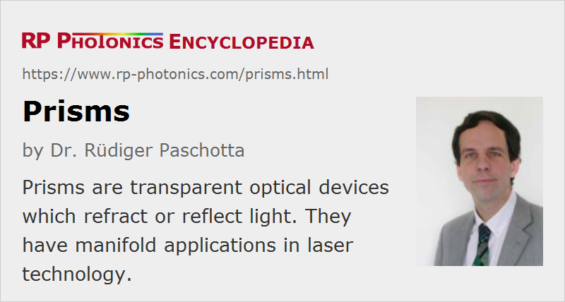

Prisms
Definition: transparent optical devices which refract or reflect light
More specific terms: anamorphic prism pairs, corner cube prisms, wedge prisms
German: Prismen
How to cite the article; suggest additional literature
Author: Dr. Rüdiger Paschotta
Optical prisms are transparent devices, in most cases consisting of some type of optical glass, through which light can be sent. As the end faces are not parallel to each other, refraction (a change of beam direction) occurs, which is somewhat wavelength-dependent due to the chromatic dispersion of the material. In some cases, however, one uses total internal reflection, and the output beam direction may then not be wavelength-dependent.
Reflections at prism surfaces are often unwanted. In some cases, they are suppressed at least for p polarization by having a beam angle close to Brewster's angle. In other cases, one applies anti reflection coatings to the surfaces. However, there are also reflecting prisms (see below), having mirror coatings on some surfaces.
Prisms find many different applications in optics; some of them are discussed below.
Dispersive Prisms
If a laser beam propagates through a prism, where the end faces are not parallel to each other, there is a beam deflection, the magnitude of which depends on the refractive index. Due to the chromatic dispersion of the material, the deflection angle becomes wavelength-dependent. This phenomenon is exploited in dispersive prisms as used for various purposes:
- One can separate wavelength components with substantially different wavelengths in a beam. For example, one can separate a frequency-doubled beam from residual fundamental light. Also, one may use that effect in a spectrometer, but only with a poor wavelength resolution, as the angular dispersion is not very high.
- Similarly, one may combine beams at different wavelengths (→ spectral beam combining). (If the wavelengths are relatively close, diffraction gratings are better suited, as they offer a much higher angular dispersion.)
- An intracavity prism in a laser can be used for wavelength tuning.
- Dispersive prism pairs are used to generate chromatic dispersion which is not just that of the prism material, as the path length in the whole setup also becomes wavelength-dependent (see Figure 1). This methods is used, for example, for dispersion compensation in mode-locked lasers. Anomalous dispersion can be obtained even if the prism dispersion is normal.
Typically, one uses a symmetric configuration, where the input and output beams have approximately the same angle against the corresponding surface. This allows one to have Brewster's angle at both surfaces, provided that the prism angle is chosen appropriately. Also, one avoids changes of the beam size. A prism is easily aligned to that symmetric configuration, as it leads to the smallest deflection angle.
If one uses Schott F10 glass as an example of a highly dispersive flint glass, a prism angle of 60° as obtained in a equilateral triangle is quite suitable, as it allows for an approximately symmetric configuration with input and output angles close to Brewster's angle, which is also close to 60°.
Reflecting Prisms
Reflecting prisms are optical prisms where one exploits the reflection of light at at least one surface. The reflection may either be caused by a coating applied to the surface – a dielectric coating or a metal coating – or one may use total internal reflection, if the angle of incidence is large enough.
Prisms for Image Rotation, Polarization Manipulation and Beam Shifting
Prisms with multiple internal reflections (e.g. pentaprisms) are often used in imaging systems, for example in order to perform image rotations in the viewfinders of photo cameras and in binoculars. Other devices are used for manipulating the polarization state of light.
Different kinds of rotations are reflections can be achieved with prisms of different geometries, causing different numbers of reflections. Also, prisms can be used for achieving transverse offsets of images or laser beams, where the alignment tolerances are less strict than for mirror arrangements.
Retroreflector Prisms

Some reflecting prisms are used as retroreflectors, where one exploits total internal reflection at two different locations (Figure 2). The reflected beam is parallel to the incoming beam, if the angle between the reflecting surfaces is 90° – even if the prism is somewhat rotated around an axis perpendicular to the drawing plane; only the beam offset can be somewhat changed. For a prism with two reflections as shown, this principle does not work for a prism rotation around an axis in the plane. There are corner cube prisms where reflections on three mutually perpendicular services occur, so that slight rotations of the prism around any axis will not change the direction of the outgoing beam.
Note that a mirror would be different in that respect: a tilt of the mirror would change the beam direction by twice the tilt angle. Prism retroreflectors are much simpler to align, as their exact orientation does not matter. The crucial advantage of prisms results from the fact that any rotation affects the direction of more than one relevant reflecting surface, but maintaining their relative orientations.
Wavelength-dependent refraction at the input/output prism surface is not relevant in the shown configuration.
Note that phase changes for total internal reflection in prisms are polarization-dependent. Therefore, arbitrary polarization states can generally not be preserved.
Anamorphic Prisms
Anamorphic prisms are used for modifying the beam size in one direction. Here, one uses substantially different angles of the input and output beam with respect to the corresponding surfaces – for example, normal incidence at the input (see Figure 3). The beam size is changed only in one direction – not due to any kind of focusing, but simply due to the geometry.
As at least one of the beams is far from Brewster's angle, one often uses anti-reflection coatings.
If the change of beam direction is disturbing, one can use a prism pair which is oriented such that there is only a parallel shift of the beam.
A typical application of anamorphic prisms is for symmetrizing the output beam of a laser diode. One often uses anamorphic prism pairs for that purpose in order to keep the beam direction unchanged.
Compound Prisms
Compound prisms are made by contacting two or more prisms consisting of different materials. For example, a double-Amici prism is made such that the refraction at the internal surface leads to an overall zero deflection angle, but to a wavelength-dependent beam offset. It can be used in simple low-resolution spectrometers.
Prism Polarizers
Polarizers are often made in the forms of prisms, e.g. Glan–Taylor prisms and Wollaston prisms. The article on polarizers gives more details.
Conical Prisms
There are prisms hearing a conical surface; these are called axicons.
Suppliers
The RP Photonics Buyer's Guide contains 157 suppliers for prisms. Among them:
Questions and Comments from Users
Here you can submit questions and comments. As far as they get accepted by the author, they will appear above this paragraph together with the author’s answer. The author will decide on acceptance based on certain criteria. Essentially, the issue must be of sufficiently broad interest.
Please do not enter personal data here; we would otherwise delete it soon. (See also our privacy declaration.) If you wish to receive personal feedback or consultancy from the author, please contact him e.g. via e-mail.
By submitting the information, you give your consent to the potential publication of your inputs on our website according to our rules. (If you later retract your consent, we will delete those inputs.) As your inputs are first reviewed by the author, they may be published with some delay.
See also: prism pairs, anamorphic prism pairs, axicons, polarizers, thin-film polarizers, spectrometers
and other articles in the category general optics
|  |
If you like this page, please share the link with your friends and colleagues, e.g. via social media:
These sharing buttons are implemented in a privacy-friendly way!